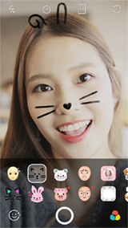
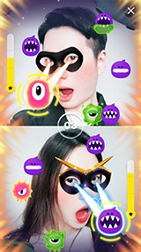

-
언제 어디서나
무료 메세지
-
언제 어디서나 빠르고 간편하게 친구들과 무료 메시지를
나눠보세요. 1:1은 물론 그룹 대화도 가능합니다.
아이폰과 안드로이드, 윈도우폰, 블랙베리, 노키아폰 등의
스마트폰 뿐만 아니라 PC에서도 즐길 수 있습니다.
-
무료
영상/음성 통화
-
아무리 멀리 떨어져 있는 친구라도 LINE만 있으면
실시간 영상/음성통화가 무료!
듣고 싶은 목소리, 보고 싶은 얼굴이 있다면 망설이지 마세요.
-
현재 iPhone, Android 폰, Windows Phone, iPad,
PC(Windows/macOS) 및 LINE Lite(Android에서 제공)
에서 이용할 수 있습니다.
-
대화가 더욱
즐거워지는
LINE 스티커
-
10,000개가 넘는 스티커와 이모티콘으로
미묘한 감정까지 섬세하게 표현해 보세요.
LINE 스티커로 대화가 더 즐거워집니다.
스티커샵에서는 재기 발랄한 LINE 오리지널 캐릭터뿐만 아니라
전 세계 유명 캐릭터 스티커까지 모두 만나볼 수 있습니다.
-
사진/동영상
공유에서
음성 메시지까지
-
사진/동영상
공유에서
음성 메시지까지
사진, 동영상 공유는 물론 음성 메시지와 연락처,
위치 정보 전송까지!
LINE이라면 친구와 쉽고 빠르게 공유할 수 있습니다.
-
다양한
생활꿀팁과
유용한
기능이 가득
-
날씨 친구, 재해 속보에서 통역까지!
스마트한 LINE 하나면 일상이 더욱 즐거워져요.

- 타임라인website
- 친구들끼리만 공유하고 싶다면 타임라인에
올려보세요. 텍스트, 사진, 동영상, 스티커로
내 소식을 공유하고 친구의 소식도
확인할 수 있습니다.

- Keep
- 보관하고 싶었던 메세지, 사진, 동영상 등을
이제 Keep에 보관하세요.
필요할 때 쉽게 찾아보고 친구들에게도
간편하게 공유할 수 있습니다

- Live
-
우리 아이 첫 걸음마에서 신나는 콘서트,
즐거운 모임까지, 혼자만 즐기기 아쉬운 순간들을
대화방에서 실시간 영상으로 공유해 보세요.
- 
- 페이스 이펙트
-
내가 상상했던 모습 그대로 변신!
깜찍 필터와 이펙트로 평범한 대화를
특별하게 바꿔보세요.
- 
- Face Play
-
우린 얼굴로 승부한다!
친구와 영상통화나 대화를 하다가 즐길 수 있는
무료 게임 Face Play~!
재미있는 게임 스크린샷을 대화방, 타임라인은 물론
다양한 SNS에도 간편하게 공유할 수 있어요.